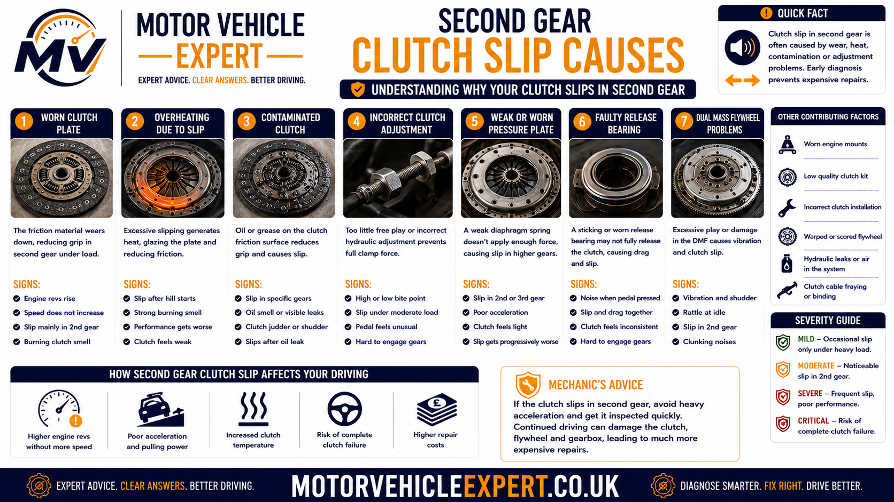
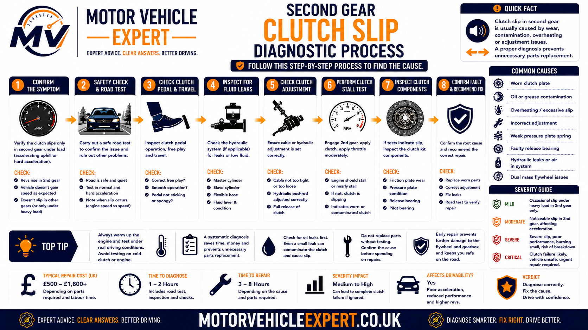
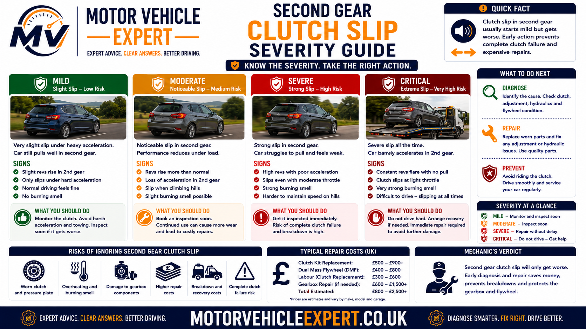
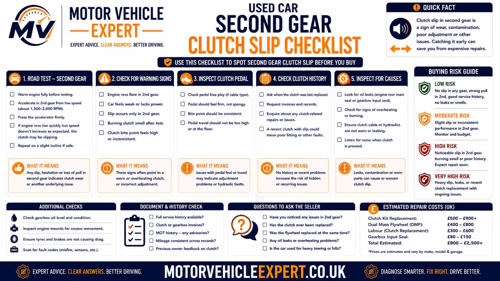

Why is the clutch slipping in second gear?
A clutch slips in second gear when its friction surfaces cannot hold the engine torque applied after the first-to-second upshift or during acceleration. Instead of the flywheel, clutch plate and gearbox input shaft rotating together, the clutch plate continues sliding. Engine speed rises, road speed increases slowly and the lost energy becomes heat.
The most common causes are worn or glazed friction lining, oil contamination, weak pressure-plate clamping, a hydraulic or cable fault that prevents full engagement, an unsuitable clutch kit or a problem following recent clutch replacement. A poor flywheel surface can also contribute to heat and inconsistent grip.
Strongest warning sign
Engine revs flare after changing into second or during acceleration, but road speed does not rise at the same rate.
Why second gear exposes it
Second gear combines substantial engine torque with enough road load to expose a clutch that is close to its holding limit.
Can you keep driving?
Mild slip may allow limited driving, but repeated flare, smoke, burning smells or unsafe acceleration requires prompt inspection.
Best next step
Confirm whether engine speed and road speed separate, then inspect the pedal, release system, oil leakage, clutch assembly and flywheel.
Confirm that the engine is revving freely while road speed lags. A weak engine, hesitation or fuel-delivery problem usually causes engine speed and vehicle acceleration to remain weak together. Genuine clutch slip creates a clear separation between RPM and road speed.
Repeated full-throttle acceleration in second gear creates additional heat and can turn early slip into severe friction damage. A controlled confirmation is enough to justify further inspection.
Use the Motor Vehicle Expert Diagnostic App to record whether the flare occurs during the gear change, after the clutch pedal is fully released, uphill, when hot or in other gears. For broader diagnostic guidance, visit the Motor Vehicle Expert Diagnostics Hub .
Symptoms of clutch slip in second gear
Second-gear clutch slip is usually noticed immediately after changing up from first gear or while accelerating once second gear is fully selected. The engine may respond normally to the accelerator, but road speed increases more slowly than expected because the clutch is not holding the engine and gearbox together firmly.
The clearest warning sign is a sudden rise in engine RPM without a matching increase in vehicle speed. This engine-speed flare may last for less than a second during early wear or continue until the driver reduces the throttle during more advanced failure.
RPM flare after the 1–2 shift
Engine speed rises immediately after second gear is selected, even though the clutch pedal has already been released.
Weak second-gear acceleration
The engine sounds busy, but the car does not accelerate with the force expected from the throttle input.
Delayed torque delivery
Acceleration may arrive only after the driver reduces the throttle and allows the clutch to grip again.
Worse under heavier throttle
Gentle driving may feel acceptable, while moderate or firm acceleration causes a clear increase in engine speed without matching road speed.
Worse when driving uphill
A gradient increases road load and engine torque demand, making a clutch close to its holding limit slip more easily.
Burning clutch smell
Repeated slip converts engine energy into heat and may produce a sharp, acrid smell after acceleration or repeated gear changes.
High bite point
The clutch may engage close to the top of the pedal travel. This supports a wear diagnosis but does not prove clutch slip by itself.
Slip worsens when hot
The clutch may hold during the first few miles but begin slipping after traffic, hills or repeated acceleration increases its temperature.
Other gears later affected
A fault first noticed in second gear may later produce flare in first gear, reverse or during acceleration in higher gears.
Second-gear symptom combinations and what they suggest
Brief flare after the upshift
Engine speed rises momentarily after second gear engages, but the clutch then grips and acceleration continues normally.
Repeated flare under acceleration
The clutch slips whenever meaningful throttle is applied in second, particularly uphill or after the vehicle becomes warm.
Smoke, strong smell or little acceleration
The clutch is generating severe heat and may be close to losing drive in several gears.
A rushed or unusually slow gear change can create brief driver-induced slip. A mechanical fault is more likely when RPM flare continues after the pedal is fully raised and repeats during ordinary smooth shifts.
Repeated acceleration in second gear can create severe clutch heat. Once genuine RPM flare has been confirmed, further high-load testing adds damage without improving the diagnosis.
Why second gear can expose clutch slip
Second gear places the clutch under a useful combination of engine torque and road resistance. The vehicle is already moving, so the engine can accelerate more freely than during the initial pull-away, but the road load remains high enough to challenge a clutch that has limited friction capacity.
When the driver changes from first into second, the clutch must reconnect two rotating assemblies smoothly. The engine and flywheel are rotating at one speed, while the gearbox input shaft is rotating at the speed required by second gear. A healthy clutch matches those speeds quickly and then locks firmly.
1. First gear accelerates the car
Engine speed rises and the vehicle gains enough road speed for the first-to-second upshift.
2. The clutch is released
Pressing the pedal separates the engine from the gearbox while second gear is selected.
3. The clutch reconnects
As the pedal rises, the pressure plate clamps the friction plate between itself and the flywheel.
4. Engine torque increases
Applying throttle in second gear tests whether the clutch can hold the engine and gearbox together without sliding.
Why second gear may reveal the fault before other gears
First gear provides strong mechanical advantage, and drivers often use relatively light throttle immediately after moving away. Higher gears may not expose the clutch during gentle driving because engine torque demand remains low.
Second gear is commonly used for firm acceleration at relatively low road speed, where the engine may produce substantial torque. This makes it a practical point at which early clutch wear becomes noticeable.
Strong engine torque
Many engines produce useful torque at the RPM range used during second-gear acceleration.
Meaningful road resistance
Vehicle weight, gradient and acceleration demand resist the engine strongly enough to challenge the clutch.
Frequent gear changes
Urban driving repeatedly uses the first-to-second shift, allowing small amounts of slip to become obvious.
A healthy clutch should tolerate normal second-gear acceleration. Repeated slip indicates insufficient friction, reduced clamping force or incomplete engagement rather than a fault caused by second gear itself.
If the clutch slips mainly while moving away from rest, compare the symptoms with clutch slipping in first gear . If the flare appears mainly during fourth, fifth or sixth gear acceleration, read clutch slip in high gears .
Common causes of clutch slipping in second gear
Second-gear clutch slip occurs when friction or pressure-plate clamping is too weak to transfer the engine torque being applied. The fault may develop through normal wear, overheating, contamination, release-system pressure, unsuitable components or installation errors.
Worn clutch plate
Thin friction lining cannot hold enough engine torque during second-gear acceleration.
Likelihood: HighGlazed friction material
Excessive heat hardens and polishes the lining, reducing grip even when some friction material remains.
Likelihood: High after overheatingOil contamination
Engine or gearbox oil on the clutch lining reduces friction and can produce slip, judder and inconsistent engagement.
Likelihood: Medium to highWeak pressure plate
A worn diaphragm spring or heat-distorted pressure plate may not clamp the friction plate firmly enough.
Likelihood: MediumHydraulic release pressure
A cylinder or return fault may keep the release mechanism partially applied after the pedal rises.
Likelihood: System dependentIncorrect cable adjustment
Insufficient free play can prevent full pressure-plate clamping on a cable-operated clutch.
Likelihood: Cable systemsHeat-damaged flywheel
Hot spots, scoring or an uneven friction surface can reduce consistent grip and overheat the clutch.
Likelihood: MediumIncorrect clutch components
An unsuitable clutch kit may not provide the required torque capacity or correct release geometry.
Likelihood: Higher after repairInstallation fault
Contamination, uneven pressure-plate tightening or incorrect release setup can cause slip after replacement.
Likelihood: Higher after recent workExcess engine torque
Engine tuning or modifications can exceed the torque capacity of a standard or poor-quality replacement clutch.
Likelihood: Modified vehiclesRiding the clutch pedal
Resting a foot on the pedal can keep light pressure on the release system and accelerate wear.
Likelihood: Driving dependentRepeated slow gear changes
Excess throttle while the pedal is still rising creates unnecessary slip, heat and glazing.
Likelihood: Wear contributor
The underlying cause should be identified before replacement parts are authorised. Fitting a clutch kit without repairing a leak, release fault or damaged flywheel can cause repeat failure.
A worn clutch may also have a heat-damaged flywheel, leaking concentric slave cylinder or oil-contaminated friction surface. The complete assembly should be inspected while the gearbox is removed.
Worn or glazed clutch friction material
The clutch plate uses friction lining to grip the flywheel and pressure plate. As the lining wears thinner, the clutch loses part of its ability to hold engine torque. The clutch may still operate during gentle driving but begin slipping when second-gear acceleration increases the load.
Glazing develops when excessive heat hardens and polishes the friction material. A glazed clutch may have usable lining thickness but still provide insufficient grip because its surface has become smooth.
Supporting symptoms
High bite point, RPM flare, burning smell, weak hill acceleration and slip that becomes worse when warm.
How the fault progresses
Brief second-gear flare can spread to first gear, reverse and higher-gear acceleration as friction capacity falls.
Likely repair
Replace the clutch kit and inspect the flywheel, release system, hydraulic components and oil seals.
Early torque loss can create momentary RPM flare without producing enough heat for a noticeable smell. A lack of odour does not rule out clutch wear.
For the wider warning-sign pattern, see clutch slipping symptoms .
Oil contamination from engine or gearbox seals
The clutch friction surfaces must remain dry. Engine oil leaking from the rear crankshaft seal or gearbox oil escaping from the input shaft area can enter the bellhousing and soak into the clutch lining.
Contamination reduces friction and can cause the clutch to alternate between gripping and sliding. This may produce second-gear RPM flare, clutch judder, unpredictable engagement and an oily or burnt-friction smell.
Rear crankshaft seal leak
Engine oil can escape from the rear of the crankshaft and spread across the flywheel and clutch assembly.
Gearbox input shaft seal leak
Gearbox oil can travel along the input shaft and contaminate the centre of the clutch plate.
Signs that support contamination
- The amount of slip changes from one journey to another.
- Clutch judder occurs as well as RPM flare.
- An oily or hot-friction smell develops.
- Oil is visible near the engine and gearbox joint.
- The problem returned after a previous clutch replacement.
- Slip becomes inconsistent as the clutch warms.
Cleaning an oil-soaked clutch lining is not normally a dependable repair. The leaking seal and damaged friction components should be corrected during the same gearbox-removal operation.
The oil leak advisory guide explains visible leak severity, MOT wording and repair urgency.
Weak or heat-damaged pressure plate
The pressure plate provides the clamping force that holds the friction plate against the flywheel. If the diaphragm spring weakens, the cover distorts or the friction face becomes heat damaged, the clutch may not hold the engine torque applied in second gear.
Weak diaphragm spring
Reduced spring force allows the clutch plate to slide when engine torque increases.
Heat distortion
Repeated slip can create hot spots and uneven contact across the pressure-plate surface.
Release-system preload
Hydraulic pressure, incorrect cable adjustment or a binding release mechanism can keep the pressure plate partly released.
Reusing a weak or overheated pressure plate can cause a new friction plate to slip, engage unevenly or fail prematurely.
Dual mass flywheel involvement in second-gear clutch slip
The flywheel provides one of the friction surfaces used by the clutch plate. Many modern diesel and high-torque petrol vehicles use a dual mass flywheel to absorb engine vibration before it reaches the gearbox.
Internal dual mass flywheel wear does not normally create clutch slip on its own. However, excessive movement, heat damage, scoring or an uneven friction surface can prevent consistent clutch engagement and increase the scope of the eventual repair.
Excess internal movement
Worn internal springs and bearings may allow excessive movement between the two flywheel masses.
Heat-damaged friction face
Repeated clutch slip can create hot spots, scoring, cracks or an uneven contact surface.
Reduced vibration damping
A worn flywheel may add rattle, knocking or drivetrain vibration to the second-gear slip complaint.
Signs that increase suspicion of flywheel wear
- Rattling at idle that changes with clutch-pedal position.
- A knock during engine start-up or shutdown.
- Judder during first-gear or reverse engagement.
- Vibration through the floor, pedal or gear lever.
- A previous clutch replacement that reused the old flywheel.
- Visible heat damage after gearbox removal.
- Movement outside the vehicle manufacturer's permitted limits.
Gearbox bearings, release bearings, engine mounts and loose drivetrain components can create similar noises. Flywheel movement and condition should be measured against vehicle-specific limits.
Gearbox removal accounts for much of the labour cost. A marginal flywheel should be identified during clutch replacement to avoid paying for the same dismantling procedure again.
Hydraulic, cable and release-system faults
The clutch must engage fully after the pedal is released. A hydraulic, cable or release-mechanism fault can leave pressure on the pressure plate and reduce the clamping force available during second-gear acceleration.
Release-system faults become more likely when the symptom appears suddenly, follows hydraulic or cable work or is accompanied by a changing bite point, incomplete pedal return or difficult gear selection.
Master cylinder fault
Internal restriction or seal problems may prevent hydraulic pressure from returning normally after the pedal rises.
External slave cylinder
A sticking external slave cylinder may keep the release fork partly applied or produce inconsistent clutch engagement.
Concentric slave cylinder
An internal hydraulic release bearing can leak, bind or fail to return fully and normally requires gearbox removal.
Incorrect cable free play
A cable adjusted too tightly can hold the release mechanism partly applied even after the pedal is released.
Release bearing binding
A damaged bearing, fork or guide tube can restrict return movement and reduce pressure-plate clamping.
Pedal obstruction
Floor mats, trim or pedal-linkage faults can prevent complete pedal return on some vehicles.
Clues that support a release-system fault
- The clutch pedal does not return fully.
- The bite point changes during the journey.
- Slip began after clutch hydraulic or cable work.
- The pedal feels unusually light, heavy or inconsistent.
- Gear selection has also become difficult.
- The clutch-fluid level is falling.
- Fluid is visible near the master or slave cylinder.
- The symptom changes after repeated pedal operation.
Some vehicles use one reservoir for both systems. A falling fluid level or significant hydraulic leak may therefore have wider safety implications and requires immediate inspection.
Compare sudden hydraulic pressure loss with clutch pedal goes to the floor and a pedal that fails to return with clutch pedal stuck down .
Why a new clutch may slip in second gear
A newly fitted clutch should hold normal engine torque once the pedal is fully released. Persistent RPM flare in second gear should not be dismissed automatically as bedding in, especially where acceleration is weak or a burning smell develops.
Oil contamination
An unrepaired rear crankshaft or gearbox input seal can contaminate the new friction plate shortly after installation.
Poor flywheel condition
A scored, polished or heat-damaged flywheel may prevent the new clutch from developing consistent grip.
Incorrect clutch application
The fitted kit may not match the engine, gearbox, flywheel or torque output of the vehicle.
Pressure plate fitted incorrectly
Uneven tightening, incorrect torque or unsuitable fasteners can affect pressure-plate clamping.
Release-system preload
Incorrect cable adjustment or retained hydraulic pressure can keep the new clutch partially disengaged.
Insufficient torque capacity
A low-quality or unsuitable clutch may not hold the torque produced by a tuned or high-output engine.
What to do if the problem followed clutch replacement
- Record when the second-gear RPM flare first appeared.
- Keep the itemised repair invoice and warranty information.
- Confirm whether the flywheel was replaced or reused.
- Ask whether the slave cylinder and oil seals were inspected.
- Avoid repeated high-load acceleration tests.
- Return the vehicle to the fitting garage promptly.
- Ask for the findings and proposed remedy in writing.
Normal bedding should not cause severe RPM flare, smoke or continuing loss of acceleration. Repeated driving can overheat new components and complicate a warranty claim.
For the complete post-installation workflow, read clutch slip after replacement .
Clutch slips only in second gear vs slipping in every gear
A clutch that appears to slip only in second gear may be showing an early weakness under a particular combination of engine torque and road load. Slip in first gear, reverse and higher gears usually indicates that more of the clutch's overall torque capacity has been lost.
Early or condition-specific slip
- First-gear pull-away still feels normal.
- RPM flare appears after the 1–2 shift.
- Gentle acceleration may not reproduce the symptom.
- Slip is worse uphill or when hot.
- Release-system or technique factors may contribute.
Developing clutch wear
- RPM flare occurs under medium or heavy acceleration.
- Fourth, fifth or sixth gear also exposes the fault.
- A high bite point or smell may be present.
- Friction wear or weak clamping becomes more likely.
- Repair should be arranged promptly.
Advanced torque-capacity loss
- Pull-away and reversing are becoming difficult.
- Road speed repeatedly fails to match engine speed.
- Heat and smell develop quickly.
- The clutch may be close to complete failure.
- Driving should be limited or stopped.
The absence of obvious slip in other gears does not prove that the clutch is healthy. Second gear may simply be the first normal driving condition that exceeds its remaining friction capacity.
Compare take-off symptoms with clutch slipping in first gear , reverse manoeuvring with clutch slip in reverse and higher-load acceleration with clutch slip in high gears .
Second-gear gearbox fault vs clutch slip
Drivers sometimes describe a second-gear gearbox problem as slipping, but manual gearbox faults normally behave differently from clutch slip. A clutch loses the connection between engine RPM and road speed. A gearbox fault is more likely to affect gear engagement, gear retention or mechanical noise.
RPM rises while second gear remains selected
- The gear lever stays in second gear.
- Engine speed rises without matching acceleration.
- No crunching is required for the fault to occur.
- Reducing throttle may allow the clutch to grip.
- The symptom may appear in other gears under load.
Difficulty selecting or retaining second gear
- Second gear crunches during selection.
- The gear lever jumps back into neutral.
- Whining, grinding or knocking comes from the gearbox.
- The problem changes with gear-lever pressure.
- Engine RPM does not necessarily flare.
Potential second-gear gearbox faults
Worn synchroniser
A worn synchroniser can cause crunching or resistance during the first-to-second gear change.
Worn selector components
Selector fork, hub or linkage wear may prevent second gear engaging or remaining engaged fully.
Internal gear damage
Damaged teeth or bearings may cause whining, grinding, vibration or loss of drive through a particular ratio.
When second gear stays selected and the engine revs rise without matching road speed, the clutch and release system should be assessed before condemning the gearbox.
Engine hesitation vs clutch slip in second gear
A vehicle that accelerates poorly in second gear does not automatically have a slipping clutch. Fuel, ignition, air, turbocharger, exhaust or engine-management faults can reduce power without causing clutch torque loss.
Engine speed rises freely
- The engine responds immediately to the accelerator.
- RPM increases faster than road speed.
- A burning friction smell may develop.
- Slip worsens uphill or when hot.
- Reducing throttle can restore temporary grip.
RPM and acceleration are both weak
- The engine hesitates, stutters or misfires.
- RPM rises slowly rather than flaring.
- The exhaust note may sound uneven.
- An engine warning light may be illuminated.
- The weakness remains after the clutch is fully engaged.
Checks that help separate the faults
Watch the rev counter
A sudden RPM increase without matching road speed strongly supports clutch slip.
Check for engine fault evidence
Rough idle, warning lights, diagnostic trouble codes and stuttering point towards an engine fault.
Compare other gears
Clutch slip often follows engine torque and road load, while an engine fault may remain present throughout the rev range.
Poor acceleration can originate from engine, turbocharger, fuel, exhaust, brake or gearbox faults. Genuine clutch slip should produce a clear separation between engine speed and road speed.
Compare broader performance symptoms with car feels slow to accelerate , car revs but will not accelerate and car stutters when accelerating .
How a mechanic diagnoses clutch slip in second gear
A professional diagnosis should confirm genuine clutch slip, identify why the clutch is not holding torque and rule out gearbox, engine and driving-technique problems before gearbox removal is authorised.
1. Confirm RPM flare
Establish whether engine speed rises faster than road speed after the first-to-second upshift or during acceleration.
2. Confirm pedal release
Check that the clutch pedal is fully raised before the flare begins.
3. Compare load conditions
Record whether the symptom changes with throttle demand, gradient, vehicle load or temperature.
4. Compare other gears
Check first gear, reverse and ordinary higher-gear acceleration for additional signs of clutch slip.
5. Inspect the release system
Check pedal return, cable free play, hydraulic cylinders and release movement.
6. Look for contamination
Inspect the engine and gearbox joint and identify possible oil or hydraulic leakage.
7. Assess flywheel evidence
Listen for rattle, shutdown knock and judder, and review previous clutch and flywheel work.
8. Inspect internally if justified
Remove the gearbox to inspect the friction plate, pressure plate, flywheel, release system and accessible seals.

The workflow separates clutch wear from poor shifting technique, gearbox faults, engine weakness and release-system problems.
External checks before gearbox removal
- Check that the clutch pedal returns fully.
- Check cable free play where adjustment is provided.
- Inspect clutch-fluid level and hydraulic leakage.
- Confirm second gear remains selected during the fault.
- Look for oil around the engine and gearbox joint.
- Check engine idle, warning lights and fault codes.
- Listen for flywheel and release-bearing noise.
- Review clutch, flywheel and oil-seal invoices.
- Confirm whether the engine has been modified.
- Record whether the slip changes when hot.
Use the Motor Vehicle Expert Diagnostic App to record whether the flare occurs while the pedal is rising, after it is fully released or only once heavier throttle is applied. That detail can separate technique, adjustment and friction faults.
Repeated second-gear acceleration can overheat a weak clutch quickly. Use only the minimum safe load required to confirm RPM flare and stop immediately if smoke or a severe smell appears.
What different second-gear slip patterns may indicate
Symptom patterns help prioritise the inspection, but they do not confirm a repair by themselves. The final diagnosis should combine road-test evidence, pedal and hydraulic checks, leak inspection and internal component condition.
| Slip pattern | Fault areas to prioritise | Supporting checks |
|---|---|---|
| Flare while the clutch pedal is still rising | Driving technique, slow release or adjustment | Repeat using a normal smooth shift |
| Flare after the pedal is fully released | Worn clutch, glazing or weak pressure plate | Compare throttle load, temperature and other gears |
| Slip mainly uphill | Limited friction capacity | Check higher-gear load and hot operation |
| Slip plus judder | Contamination or flywheel surface damage | Inspect leaks, smell and take-up vibration |
| Pedal fails to return fully | Hydraulic, cable or release-system fault | Check cylinders, free play and release travel |
| Second gear crunches or jumps out | Gearbox synchroniser or selector fault | Assess gear engagement separately from clutch slip |
| Slip began after clutch replacement | Installation, contamination, flywheel or adjustment fault | Return to the fitting garage under warranty |
| Acceleration weak but RPM does not flare | Engine-performance or brake-drag fault | Diagnose engine and wheel resistance |
| Slip appears in several gears | Advanced friction wear or weak clamping force | Limit driving and prepare for clutch replacement |
A worn clutch may regain grip when torque falls, but the underlying friction or clamping fault remains present.
Second-gear clutch slip severity guide
Severity depends on the size and duration of the RPM flare, how often it occurs, whether other gears are affected and whether heat, smoke or pedal changes are developing.

Judge urgency together with burning smell, smoke, uphill performance, slip in other gears, hydraulic leakage and abnormal flywheel noise.
Brief and occasional RPM flare
The flare is slight, acceleration remains predictable and there is no smell, smoke, leakage, pedal change or slip in other gears.
Record when it happens and arrange diagnosis if the symptom repeats or becomes stronger.
Repeated or worsening slip
RPM flares during most second-gear acceleration, the symptom worsens uphill or hot, or a burning smell begins to develop.
Avoid hard acceleration, towing and unnecessary journeys before professional inspection.
Severe flare, smoke or lost acceleration
The engine revs with little increase in road speed, smoke appears, several gears slip or the vehicle cannot accelerate safely.
Stop in a safe location and arrange professional assistance or recovery.
Factors that increase urgency
- The RPM flare is becoming longer or more frequent.
- A strong burnt-clutch smell develops.
- Smoke appears near the engine and gearbox.
- The clutch begins slipping in additional gears.
- The vehicle cannot accelerate safely into traffic.
- The clutch pedal fails to return fully.
- Oil or hydraulic fluid is leaking.
- Judder or heavy flywheel noise develops.
- The problem began immediately after clutch replacement.
- The fault worsens substantially during one journey.
Once friction heat builds, clutch deterioration can accelerate rapidly. Recovery is safer than continuing until the vehicle becomes unable to accelerate or move away.
Can you keep driving with clutch slip in second gear?
Mild second-gear clutch slip does not always mean complete failure is immediate, but every slipping event creates heat. Continued acceleration can wear the friction lining more quickly, damage the pressure plate and transfer excessive heat into the flywheel.
The decision to continue driving should depend on how severe the RPM flare is, whether the vehicle can accelerate predictably, whether other gears are affected and whether smell, smoke, leakage, abnormal noise or pedal changes are developing.
Mild and occasional flare
Engine-speed flare is brief, acceleration remains predictable and there is no smoke, strong smell, fluid leak, pedal change or severe mechanical noise.
Repeated or worsening slip
RPM rises during most second-gear acceleration, the fault becomes worse uphill or hot, or slip begins appearing in additional gears.
Severe slip or unsafe acceleration
The engine revs with little increase in road speed, smoke appears, the burning smell is severe or the vehicle cannot accelerate safely into traffic.
Stop driving immediately if:
- The vehicle cannot accelerate safely into moving traffic.
- Engine revs rise with almost no increase in road speed.
- Smoke appears from the engine and gearbox area.
- A strong burnt-clutch smell remains after stopping.
- The clutch begins slipping in several gears.
- The pedal remains down or changes suddenly.
- Hydraulic fluid is leaking or the reservoir level is falling.
- Gear selection becomes difficult enough to affect control.
- Heavy judder, grinding or repeated knocking develops.
- The symptom worsens substantially during one short journey.
Applying more throttle may increase engine speed, but it does not restore clutch grip. The extra torque creates more heat and may turn a worn clutch into a complete clutch-and-flywheel failure.
How to reduce clutch load before inspection
Avoid hard acceleration
Use gentle throttle and allow the vehicle to gain speed gradually rather than demanding maximum torque in second gear.
Avoid steep routes
Gradients increase road load and can expose or worsen a clutch that is already close to its holding limit.
Avoid towing and heavy loads
Additional vehicle mass increases the torque required during acceleration and may accelerate clutch deterioration.
Change gear smoothly
Release the clutch normally and avoid applying heavy throttle before the pedal has fully returned.
Leave more joining distance
Do not rely on rapid acceleration when entering a roundabout, junction or faster road.
Choose a recoverable route
Avoid journeys where complete clutch failure could leave the vehicle stranded in a dangerous or inaccessible position.
Stopping before severe overheating can protect the flywheel and pressure plate. Recovery may cost less than continuing until the complete assembly requires replacement.
Will clutch slip in second gear fail an MOT?
Clutch friction wear and torque capacity are not normally tested as separate items during the standard UK MOT. Second-gear clutch slip alone therefore does not automatically result in an MOT failure.
However, the vehicle must remain capable of being driven and positioned safely during the test. Related defects such as serious fluid leakage, insecure engine or gearbox mountings or another fault affecting safe vehicle control may be relevant in their own right.
Second-gear slip alone
The MOT does not normally measure clutch lining thickness or pressure-plate clamping force.
Severe loss of acceleration
Advanced clutch failure may make the vehicle difficult to manoeuvre or unsafe to position during the test.
Significant oil leakage
A substantial engine or gearbox oil leak may be assessed according to its severity, location and environmental or safety impact.
Clutch hydraulic leak
A clutch-fluid leak may be especially important where the clutch shares a reservoir with the braking system.
Insecure powertrain mounting
A badly damaged engine or gearbox mounting may be relevant if it allows excessive or unsafe movement.
Engine fault mistaken for slip
Engine warning lights, emissions defects or poor running may be assessed separately during the MOT.
Why an MOT pass does not prove the clutch is healthy
The tester does not remove the gearbox, inspect the clutch friction lining, measure pressure-plate force or assess the internal flywheel surface. A vehicle can pass its MOT and still require an expensive clutch, flywheel or hydraulic repair shortly afterwards.
| Condition | Likely MOT relevance | Recommended action |
|---|---|---|
| Mild second-gear slip with no other defect | Not normally a direct failure item | Arrange diagnosis despite any MOT pass |
| Severe slip and poor vehicle movement | Test may not be completed safely | Recover and repair before the test |
| Significant engine or gearbox oil leak | May be recorded or fail depending on severity | Trace and repair the leak source |
| Hydraulic leak affecting a shared reservoir | Potential braking-system relevance | Do not drive until inspected |
| Severely insecure engine or gearbox mounting | May be a testable safety defect | Repair before presenting the vehicle |
| Engine warning light and poor acceleration | Warning-light or emissions relevance possible | Diagnose engine and clutch symptoms separately |
Used-car buyers should assess acceleration and RPM behaviour directly. MOT validity does not prove that the clutch plate, pressure plate, flywheel or hydraulic release system is mechanically sound.
For a dedicated explanation of the UK test position, read does the MOT check the clutch? and use the Vehicle Diagnostics Hub to understand the difference between an MOT inspection and a mechanical diagnosis.
Clutch slipping in second gear repair costs
Repair cost depends on whether the symptom is caused by ordinary clutch wear, oil contamination, weak pressure-plate clamping, a release-system problem, poor flywheel condition or an installation fault after earlier clutch work.
These broad UK estimates are intended for repair planning in 2026 rather than as fixed quotations. Vehicle design, labour rates, parts quality, engine output, four-wheel drive and restricted gearbox access can change the final price substantially.
Clutch slip inspection
Controlled road test, RPM and road-speed comparison, pedal checks, hydraulic or cable assessment and initial leak inspection.
£60–£150Clutch kit replacement
Replacement friction plate, pressure plate and release bearing where the vehicle uses a separate bearing.
£550–£1,100Clutch and dual mass flywheel
Replacement of the clutch kit and worn dual mass flywheel during the same gearbox-removal procedure.
£900–£1,800+Rear crankshaft seal with clutch
Repair of a rear engine oil seal plus replacement of the contaminated clutch components.
£700–£1,400+Input shaft seal with clutch
Repair of a gearbox input-area oil leak and replacement of affected friction components.
£700–£1,500+Concentric slave cylinder
An internal hydraulic release bearing requires gearbox removal and is commonly renewed with the clutch.
£600–£1,200+Clutch master cylinder
Replacement and bleeding where the master cylinder prevents normal pressure release or pedal return.
£180–£450External slave cylinder
Replacement of an externally mounted slave cylinder followed by bleeding and operational checks.
£150–£350Cable adjustment or replacement
Adjustment of clutch free play or replacement of a stretched, damaged or binding cable.
£80–£300Solid flywheel assessment
Inspection and, where technically suitable, resurfacing or replacement of a scored or heat-damaged solid flywheel.
£150–£600 additionalPost-replacement investigation
Inspection of contamination, flywheel condition, component compatibility, release adjustment and fitting workmanship.
£0–£300 initial assessmentHigher-capacity clutch upgrade
A tuned engine may require an uprated clutch assembly capable of holding the vehicle's increased torque output.
£750–£2,000+Request the expected clutch-kit price and the likely total if the flywheel, concentric slave cylinder, oil seals or other release components are also found defective after gearbox removal.
Second-gear clutch slip repair decision table
| Diagnosis or finding | Likely repair | Broad UK estimate | Priority |
|---|---|---|---|
| Mild second-gear flare with no confirmed cause | Structured diagnosis and controlled road test | £60–£150 | Diagnose before replacing parts |
| Incorrect clutch cable free play | Adjust or replace the clutch cable | £80–£300 | Prompt low-cost check |
| Worn clutch with serviceable flywheel | Clutch kit replacement | £550–£1,100 | High priority |
| Worn clutch and failed dual mass flywheel | Clutch kit and DMF replacement | £900–£1,800+ | Major repair |
| Oil-contaminated clutch plate | Repair the leaking seal and replace the clutch | £700–£1,500+ | Repair source and damage together |
| Concentric slave cylinder fault | Slave cylinder and usually clutch replacement | £600–£1,200+ | Avoid duplicate gearbox-removal labour |
| Slip after recent clutch replacement | Warranty inspection and installation review | Warranty dependent | Return to the fitting garage promptly |
| Second gear crunches or jumps out | Gearbox diagnosis and internal repair | £500–£2,000+ | Separate gearbox fault from clutch slip |
| Engine weakness without RPM flare | Engine diagnosis and fault-specific repair | £80–£1,000+ | Confirm clutch slip before removal |
| Standard clutch cannot hold tuned engine torque | Suitable uprated clutch and flywheel assessment | £750–£2,000+ | Match clutch capacity to engine output |
What should a clutch repair quotation include?
- The exact clutch-kit brand and included components.
- Whether the release bearing is included.
- Whether the concentric slave cylinder is included.
- Whether the dual mass flywheel is included or priced separately.
- How the existing flywheel will be inspected and measured.
- Whether gearbox oil replacement is included.
- Whether hydraulic bleeding is included.
- Whether accessible engine and gearbox seals will be inspected.
- Whether cable adjustment or hydraulic return will be checked.
- Whether the clutch is suitable for any engine modifications.
- The parts and labour warranty period.
- The process for approving additional repairs.
A low clutch quotation may exclude the flywheel, internal slave cylinder, oil seals, gearbox oil or additional labour. Compare exactly what is included and what warranty is provided.
For a wider breakdown of clutch-kit, flywheel, hydraulic and labour pricing, read the UK clutch replacement cost guide .
Should you buy a used car with clutch slip in second gear?
A used car that produces a clear RPM flare in second gear should be treated as having an unresolved mechanical fault until an independent inspection proves otherwise. The clutch may still operate during gentle driving, but a second-gear flare can be an early sign that its remaining torque capacity is limited.
The repair may involve a clutch kit alone, but the credible complete repair can also include a dual mass flywheel, concentric slave cylinder, rear crankshaft seal, gearbox input seal or correction of poor previous workmanship. The asking price should reflect the full credible risk, not the cheapest possible explanation.
Confirmed minor release fault
An independent inspection identifies a cable-adjustment or external hydraulic fault, confirms that the clutch holds torque correctly and provides a clear repair quotation.
Mild RPM flare with uncertain cause
The car remains driveable, but the friction plate, pressure plate, flywheel, hydraulics and oil seals have not been assessed properly.
Severe slip, smell or poor history
Engine speed rises sharply with weak acceleration, smoke or a strong smell develops, several gears slip or recent clutch work has no supporting invoice and warranty.

The purpose of the road test is to observe ordinary operation, not to abuse the clutch. Repeated full-throttle testing can cause damage and may hide whether the original fault was mild or advanced.
Before starting the engine
Review the repair paperwork
- Look for an itemised clutch replacement invoice.
- Confirm the date and mileage of any clutch work.
- Check which clutch-kit brand was fitted.
- Ask whether the flywheel was replaced or reused.
- Confirm whether the slave cylinder was renewed.
- Check whether accessible oil seals were inspected.
- Review the parts and labour warranty.
Inspect the parked vehicle
- Confirm the engine is genuinely cold where possible.
- Look beneath the vehicle for fresh fluid leakage.
- Check that the clutch pedal returns fully.
- Inspect the engine and gearbox joint where visible.
- Check dashboard warning lights before start-up.
- Ask when the RPM flare was first noticed.
- Ask whether the vehicle has been engine tuned.
During the test drive
First-to-second upshift
Change gear smoothly and confirm whether RPM rises after the clutch pedal is fully released.
Moderate acceleration
Apply ordinary road-going throttle in second gear and compare engine speed with the increase in road speed.
Gradient behaviour
Observe normal acceleration on a modest incline where safe. Do not repeat steep or aggressive runs to force the fault.
Higher-gear comparison
Check whether the clutch also slips under ordinary acceleration in fourth, fifth or sixth gear.
Hot-operation comparison
Note whether the slip becomes stronger after traffic, hills or a normal-length road test.
Smell, noise and vibration
Check for burnt-friction smell, clutch judder, flywheel rattle, shutdown knock or release-bearing noise.
Questions to ask the seller
- When did the second-gear RPM flare begin?
- Does it occur while the pedal is rising or after full release?
- Is the fault worse uphill, when hot or with extra load?
- Does the clutch also slip in first, reverse or higher gears?
- Has a burning clutch smell or smoke appeared?
- Has the clutch kit been replaced previously?
- Was the dual mass flywheel replaced or reused?
- Were the rear crankshaft and gearbox input seals inspected?
- Has the engine been remapped or mechanically modified?
- Will the seller permit an independent inspection?
Clutch friction condition and flywheel wear are not fully assessed during an MOT. A car can have a fresh certificate and still require an expensive clutch, hydraulic or flywheel repair.
Until the gearbox has been removed and the assembly inspected, allow for a clutch kit, flywheel, concentric slave cylinder and oil-seal repair rather than assuming the cheapest possible fault.
Accept, negotiate or walk away?
The correct buying decision depends on symptom severity, documentary evidence, vehicle value and whether the asking price reflects the credible complete repair cost.
| Vehicle condition | Recommended decision | Reason |
|---|---|---|
| Minor cable or external hydraulic fault confirmed | Consider with a repair allowance | The fault scope is supported by evidence |
| Brief second-gear flare with no diagnosis | Negotiate heavily or pause | Internal clutch and flywheel condition remain unknown |
| RPM flare plus burning smell | Assume clutch replacement risk | Friction heat and lining damage are likely |
| Slip plus judder or flywheel noise | Assume clutch and flywheel risk | The complete repair may exceed £1,000 |
| Smoke or weak acceleration in several gears | Walk away | The clutch may be close to complete failure |
| Fault began immediately after clutch replacement | Require warranty resolution first | Installation or contamination faults may remain |
| Second gear crunches or jumps out | Obtain a gearbox inspection | The problem may include an internal gearbox fault |
| Seller refuses an independent inspection | Walk away | The repair and financial risks cannot be assessed properly |
Pre-diagnostic second-gear clutch slip checklist
Clear observations help the technician reproduce the problem without repeatedly overheating the clutch. Record the exact stage of the gear change, the throttle demand, vehicle load and temperature when the RPM flare appears.
Record when it happens
- While the clutch pedal is rising
- After the pedal is fully released
- During light or heavier throttle
- On level ground or uphill
- When the vehicle is cold or hot
- With passengers, luggage or towing load
Record the symptoms
- Engine-speed flare
- Delayed acceleration
- High or changing bite point
- Burning smell
- Judder or vibration
- Smoke or major loss of drive
Record related evidence
- First-gear pull-away behaviour
- Reverse clutch behaviour
- Higher-gear acceleration
- Pedal return and free play
- Oil or hydraulic leakage
- Recent repair or engine-tuning history
Safe checks a driver can make
- Check whether the clutch pedal returns fully.
- Confirm whether the bite point has changed.
- Look beneath the vehicle for fresh fluid leakage.
- Check whether second gear remains selected during the fault.
- Listen for abnormal start-up and shutdown noises.
- Observe whether the engine idles smoothly.
- Check for engine or transmission warning lights.
- Record whether the fault becomes worse when hot.
- Stop testing if the smell, smoke or slip increases.
Record the symptoms and operating conditions using the Motor Vehicle Expert Diagnostic App before arranging physical inspection. For broader fault-finding guidance, continue through the Motor Vehicle Expert Diagnostics Hub .
Checks to leave to a competent technician
- High-load clutch-slip confirmation.
- Hydraulic pressure and pedal-return testing.
- Working beneath a raised vehicle.
- Gearbox linkage and selector inspection.
- Removing the gearbox.
- Measuring dual mass flywheel movement.
- Inspecting clutch lining and pressure-plate condition.
- Assessing flywheel run-out and heat damage.
- Replacing oil seals and bleeding the clutch system.
Clutch and gearbox inspection requires correct lifting equipment, suitable support points, level ground and competent workshop procedures.
Clutch slipping in second gear: key takeaways
RPM flare is the strongest clue
Genuine clutch slip produces rising engine speed without a matching increase in road speed.
Pedal timing matters
Flare after the pedal is fully released is more concerning than brief slip caused by a slow or poorly timed shift.
Second gear creates a useful load test
Second gear combines substantial engine torque with meaningful road resistance, exposing limited clutch capacity.
The gearbox may not be responsible
If second gear remains selected while RPM rises, inspect the clutch before condemning the gearbox.
Heat accelerates deterioration
Every slipping event produces heat that can damage the clutch, pressure plate and flywheel.
Used-car buyers need evidence
Obtain an independent inspection and price the credible complete repair before purchasing.
Second-gear clutch slip should be diagnosed before repeated acceleration creates severe heat damage. Confirm that RPM flare occurs after full pedal release, compare other gears, inspect the release system and leaks, and assess the clutch, pressure plate and flywheel as one connected assembly.
Explore the Complete Clutch and Drivetrain Knowledge Centre
Continue through the Motor Vehicle Expert clutch cluster to compare second-gear RPM flare with pull-away slip, reverse slip, high-gear slip, clutch judder, overheating, pedal faults, gearbox symptoms and wider acceleration problems.
Clutch Slip by Driving Condition
Clutch Judder, Vibration and Heat
Pedal, Release System and Repair
Acceleration and Power Symptoms
Vehicle Diagnostics
Used-Car Buying Guides
Use the first-gear page when slip occurs while moving away, the reverse page when the vehicle struggles during backwards manoeuvring, the second-gear page when RPM flares after the upshift and the high-gear page when slip develops under heavier road load. Comparing the operating condition helps distinguish early wear from advanced clutch failure.
Clutch slipping in second gear FAQs
These 18 visible answers match the FAQ structured data in the page head exactly.
Why does my clutch slip in second gear?
A clutch may slip in second gear because worn or glazed friction material, oil contamination, weak pressure plate clamping, excessive heat, incorrect adjustment or a release-system fault prevents the clutch from holding engine torque during acceleration.
What are the symptoms of clutch slip in second gear?
Common symptoms include engine revs rising without matching acceleration, a brief flare after the first-to-second upshift, weak acceleration, a high bite point, burning clutch smell and slip that becomes worse uphill or when hot.
Can a clutch slip only in second gear?
A clutch may appear to slip mainly in second gear because this gear combines useful road speed with strong engine torque and acceleration load. The clutch may still be worn even if first gear and gentle higher-gear driving initially feel normal.
Why do the revs flare after changing into second gear?
Revs flare when the clutch does not reconnect the engine and gearbox firmly after the gear change. The clutch plate continues sliding between the flywheel and pressure plate instead of transferring all engine torque.
Can poor gear-changing technique cause second-gear clutch slip?
Releasing the clutch slowly while applying excessive throttle can create temporary slip and heat. Repeated engine-speed flare during normal smooth gear changes suggests a mechanical fault rather than technique alone.
Can oil contamination cause second-gear clutch slip?
Yes. Engine oil from a rear crankshaft seal or gearbox oil from an input shaft seal can contaminate the clutch lining, reduce friction and cause slip, judder, burning smells and inconsistent engagement.
Can a weak pressure plate cause slip in second gear?
Yes. A worn, distorted or heat-damaged pressure plate may not clamp the clutch plate firmly enough against the flywheel, allowing it to slip as engine torque rises in second gear.
Can a dual mass flywheel cause second-gear clutch slip?
A dual mass flywheel does not usually cause friction slip by itself, but excessive wear, heat damage or an uneven friction surface can contribute to poor engagement, vibration and increased repair scope.
Can hydraulic clutch faults cause second-gear slip?
Yes. A master cylinder, slave cylinder, restricted hydraulic return or binding release bearing can prevent the clutch from engaging fully and reduce available clamping force.
Can a new clutch slip in second gear?
A new clutch can slip because of contamination, incorrect installation, unsuitable components, poor flywheel condition, incorrect cable adjustment or a hydraulic release fault. Persistent slip should be returned to the fitting garage.
Does second-gear clutch slip get worse when hot?
Yes. A worn, glazed or contaminated clutch may lose more grip as temperature rises. Repeated acceleration and gear changes create additional heat and can make the fault worsen rapidly.
Is second-gear clutch slip the same as gearbox slip?
Manual gearboxes do not normally slip in the same way as a clutch. A damaged gearbox may jump out of gear, crunch or make noise, while clutch slip causes engine speed to rise without a matching increase in road speed.
Can I keep driving with clutch slip in second gear?
Limited driving may be possible if the slip is mild and the vehicle remains predictable, but worsening slip, burning smells, smoke, poor acceleration or difficulty joining traffic safely requires prompt inspection.
When should I stop driving with second-gear clutch slip?
Stop driving if the engine revs with almost no acceleration, smoke appears, a strong burning smell persists, drive is being lost, the pedal changes suddenly or the vehicle cannot accelerate safely.
How is clutch slip in second gear diagnosed?
Diagnosis includes confirming engine-speed flare after the first-to-second upshift, comparing other gears and load conditions, checking the bite point and pedal return, inspecting the release system and oil leaks, and examining the clutch and flywheel if gearbox removal is justified.
Will clutch slip in second gear fail an MOT?
Clutch wear is not normally tested as a separate MOT item, so second-gear clutch slip alone does not automatically cause failure. Related serious leaks, insecure mountings or another fault affecting safe control may still be relevant.
How much does second-gear clutch slip cost to repair in the UK?
A clutch replacement commonly costs several hundred pounds in the UK and can exceed one thousand pounds when a dual mass flywheel, concentric slave cylinder, oil seal or difficult gearbox-removal procedure is also required.
Should I buy a used car with clutch slip in second gear?
Treat second-gear clutch slip as an unresolved mechanical fault. Arrange an independent inspection, review clutch and flywheel invoices and price the credible complete repair before negotiating or buying the vehicle.